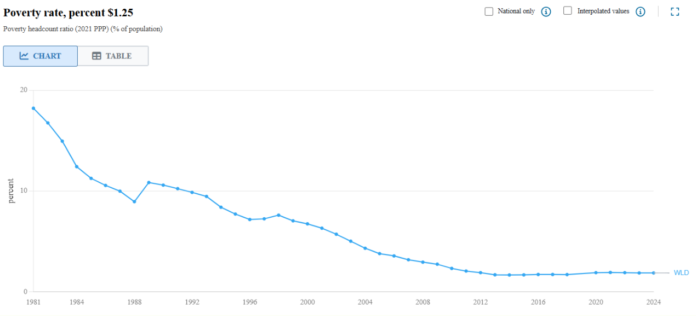
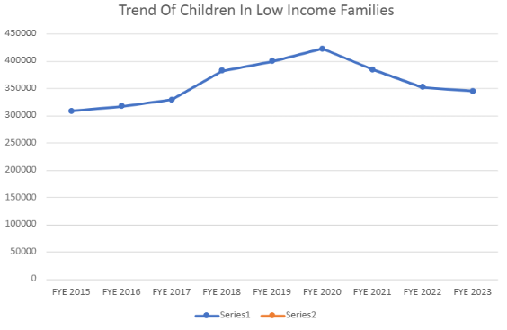
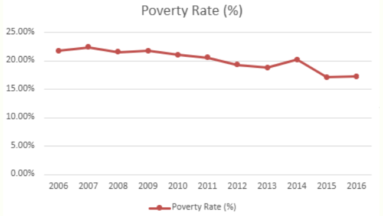
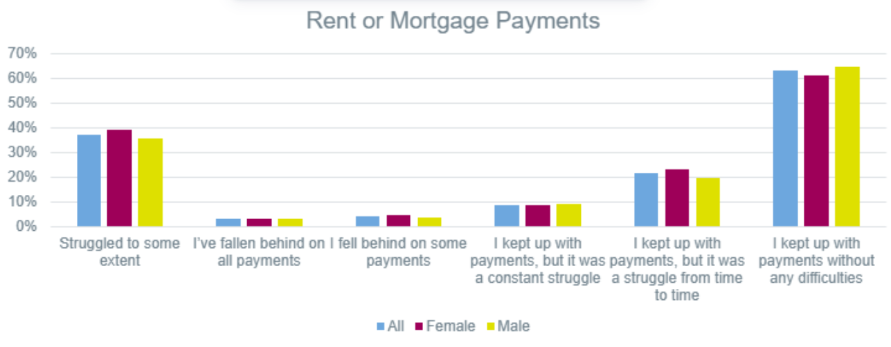
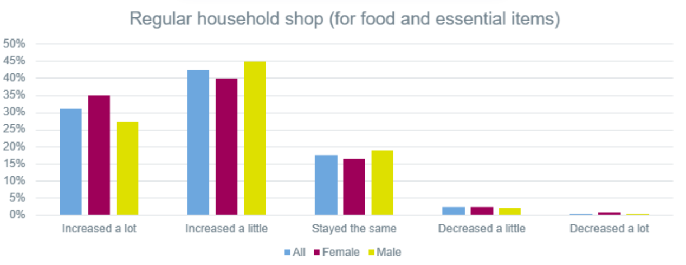

“End poverty in all its forms everywhere.”
This webpage introduces Sustainable Development Goal 1: No Poverty. Our datastore uses descriptive and diagnostic analytics to explore poverty, inequality, and cost-of-living challenges through real datasets and visualizations.
Eradicate extreme poverty for all people everywhere.
Reduce at least by half the proportion of people living in poverty in all its dimensions.
Implement social protection systems for the poor and vulnerable.
Ensure equal rights to economic resources and access to basic services.
Build resilience against economic, social, and climate-related shocks.

Poverty & Inequality Indicator (Global)
This featured chart shows the long-term trend in global poverty. It gives visitors an immediate preview of the type of evidence used in our datastore.

Children in Low Income Families Dataset (London)

Children in Poverty Dataset (London)

Cost of Living Dataset: Rent or Mortgage Payments

Cost of Living Dataset: Food and Essential Items
Poverty affects access to food, housing, opportunity, and long-term stability. Explore the data, review the findings, and learn how SDG 1 connects to real-world action.
EXPLORE THE DATA